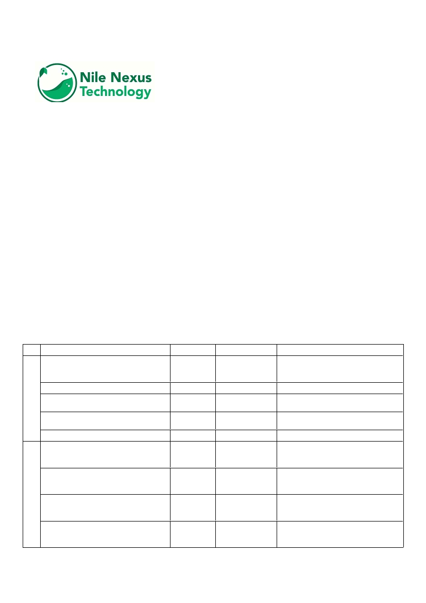
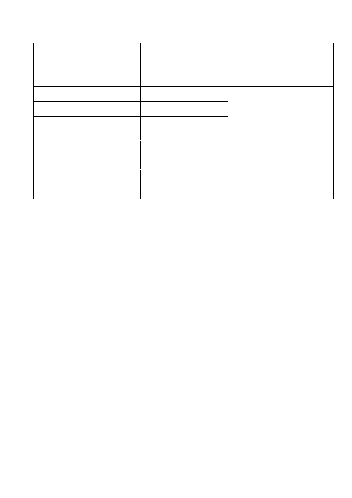

Software Documenation V 1.0
THE FIRST AFRICAN INTEGRATED INFORMATION SYSTEM
ABOUT
The river Nile is world's largest river extends across 11 countries and is the home to over 500 million
people. Climate change poses drastic challenges to the future of the Nile basin and its indigenous
populations. “By 2040, a hot and dry year could push over 45% of the people in the Nile Basin, or
nearly 110 million people, into water scarcity,” researchers predict.
The Nile Nexus Technology is an initiative to develop the first African integrated and comprehensive
W ater- E nergy- F ood- C limate (WEFC) information system to promote holistic decision support
approaches and enable augmented intelligence for the future development of the Nile basin WEFC
value chain.
The datasets were chosen from the best available global datasets for each required category. This
means the datasets needed to be both of high quality and have high enough resolution so that the
downscaling process would not be missing large amounts of information.
The usage of Nile Nexus information system is for environmental data integration modelling for
environmentalists, agronomists and energy strategic planners across the Nile Basin countries
DATA SOURCES AND OUTPUTS
The data are available for Egypt as first stage in the web app development. Users can download the
available resources for each interpolated grid cell (50 km 2 spatial resolution).
Data parameter
Unit
Spatial resolution
Source(s)
USGS EROS Archive—Digital Elevation—
1 arc-second
Mean elevation
m
Shuttle Radar Topography Mission
(30m)
(SRTM) 1 Arc-Second Global
Elevation range
m
-
Generated using GIS platform
1 arc-second
Mean slope gradient
%
Generated using GIS platform
(30m)
Generated using guidelines for soil
Slope gradient class
-
-
description. FAO
Mean slope aspect
Degrees
1 arcsec (30m)
Generated using GIS platform
GLDAS Noah Land Surface Model L4
Mean near surface air temperature
Celesius
0.25°
monthly 0.25 x 0.25 degree V2. 1."
Greenbelt, Maryland (2016).
GLDAS Noah Land Surface Model L4
Mean soil temperature 0 – 10 cm depth
Celesius
0.25°
monthly 0.25 x 0.25 degree V2. 1."
Greenbelt, Maryland (2016).
GLDAS Noah Land Surface Model L4
Mean soil temperature 10 – 40 cm depth
Celesius
0.25°
monthly 0.25 x 0.25 degree V2. 1."
Greenbelt, Maryland (2016).
GLDAS Noah Land Surface Model L4
Total precipitation rate
mm/year
0.25°
monthly 0.25 x 0.25 degree V2. 1."
Greenbelt, Maryland (2016).

GLDAS Noah Land Surface Model L4
Mean specific humidity
kg kg-1
0.25°
monthly 0.25 x 0.25 degree V2. 1."
Greenbelt, Maryland (2016).
GLDAS Noah Land Surface Model L4
Mean evapotranspiration
mm/year
0.25°
monthly 0.25 x 0.25 degree V2. 1."
Greenbelt, Maryland (2016).
Mean wind speed at 10, 50, 100, 150 &
m/s
10 arcsec 300m
200 m
Energy Sector Management Assistance
Mean air density at 10, 50, 100, 150 &
Program (ESMAP), Global Atlas for
kg/m3
10 arcsec 300m
200 m
Renewable Energy by IRENA and DTU
Mean power density at 10, 50, 100, 150
Wind Energy GWA science pages
W/m2
10 arcsec 300m
& 200 m
Photo Voltic Electricity (Mean PVOUT)
kWh/kWp
30 arcsec (1km)
Solargis
Diffuse Horizontal Irradiation (Mean DIF)
kWh/m2
9 arcsec (250m)
Solargis
Direct Normal Irradiation (Mean DNI)
kWh/m2
9 arcsec (250m)
Solargis
Global Horizontal Irradiation (Mean GHI)
kWh/m2
9 arcsec (250m)
Solargis
Longterm yearly average of global
kWh/m2
9 arcsec (250m)
irradiation at optimum tilt (Mean GTI)
Solargis
Optimum inclination [º] for inclined and
Degrees
2 arcmin (4 km)
fixed equator facing PV modules (OPTA)
Solargis
Limit of Liability/Disclaimer of Warranty: While the authors have used their best efforts in preparing
this business plan, they make no representations or warranties with respect to the accuracy or
completeness of the contents of this report and specifically disclaim any implied warranties of
merchantability or fitness for a particular purpose. No warranty may be created or extended by sales
representatives or written sales materials. The plan and strategies contained herein may not be
suitable for your situation. You should consult with a professional where appropriate. The authors
shall not be liable for any loss of profit or any other commercial damages, including but not limited
to special, incidental, consequential, or other damages.
Copyright © 2021-2025. All rights reserved to Nile Nexus Technology.